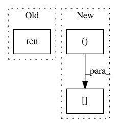

cf7d0bdc4133ea3248e054fa93aa2b5a6f8f2fca,doc/examples/compute_SNR_in_corpus_callosum.py,,,#,25
Before Change
sphere = get_sphere("symmetric724")
from dipy.viz import fvtk
ren = fvtk.ren()
cfa_crop = cfa[roi, ...]
evals = tenfit.evals[20:50,55:85, 38:39]
evecs = tenfit.evecs[20:50,55:85, 38:39]
After Change
plt.figure("Corpus callosum segmentation")
plt.subplot(1, 2, 1)
plt.title("Corpus callosum")
plt.imshow((cfa[..., 0])[40, ...])
plt.subplot(1, 2, 2)
plt.title("Corpus callosum mask with a threshold of (%.1f, %.1f, %.1f, %.1f, %.1f, %.1f)" % threshold2)
In pattern: SUPERPATTERN
Frequency: 4
Non-data size: 3
Instances
Project Name: nipy/dipy
Commit Name: cf7d0bdc4133ea3248e054fa93aa2b5a6f8f2fca
Time: 2013-09-11
Author: stjeansam@gmail.com
File Name: doc/examples/compute_SNR_in_corpus_callosum.py
Class Name:
Method Name:
Project Name: nipy/dipy
Commit Name: 6795f175226b7f171ae77b9b541076adbac9543f
Time: 2018-01-10
Author: skoudoro@gmail.com
File Name: doc/examples/reconst_csd.py
Class Name:
Method Name:
Project Name: nipy/dipy
Commit Name: d938f476feee0efd9045bc8f9bb1fe76b9898fae
Time: 2018-01-10
Author: skab12@gmail.com
File Name: doc/examples/simulate_multi_tensor.py
Class Name:
Method Name:
Project Name: nipy/dipy
Commit Name: 6c524d66dcd30d98a0f0c991252a3be644fa58ef
Time: 2013-09-11
Author: stjeansam@gmail.com
File Name: doc/examples/compute_SNR_in_corpus_callosum.py
Class Name:
Method Name: